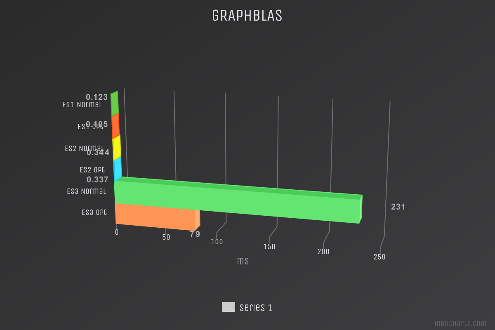

In questa sezione verranno descritti e discussi gli esempi utilizzati per verificare il funzionamento, le modifiche e i miglioramenti del codice; verranno inoltre mostrati i risultati ottenuti.
Esempi utilizzati
Sono stati utilizzati quattro esempi, tutti diversi tra loro in quanto a dimensioni dell'input, in modo da poter verificare i cambiamenti di compotamento delle funzioni al loro variare. Ci si aspetta dunque un miglioramento più evidente sugli esempi di dimensioni maggiore, questo perché eseguire operazioni complesse come la programmazione asincrona e/o parallela, su input di piccole dimensioni, in modo controintuitivo, può penalizzare le prestazioni, cosa che non accade per input più grandi.
- Esempio 1 - input 3x24
- Esempio 2 - input 3x432
- Esempio 3 - input 1192x3
- Esempio 4 - randomcubes
La funzione testata e di cui si mostrano i confronti tra i diversi risultati nelle sezioni seguenti è 'chainCongruence', nelle sue diverse versioni SM, GB, AA, eseguendo il confronto di ciascuna tra la versione originale del codice e quella ottimizzata introducento la parallelizzazione.
Per la valutazione delle prestazioni è stata utilizzata la macro julia @benchmark, presente all'interno del package BenchmarkTools.jl, la quale va a eseguire la funzione testata un certo numero di volte, restituendo tempo medio di esecuzione (espresso in millisecondi o microsecondi) e lo spazio medio allocato (espresso in Mebibyte o Kibibyte), nei grafici seguenti vengono mostrati i tempi medi di esecuzione.
Julia Native Sparse Matrix
L'implementazione SM non ha mostrato grandi miglioramenti, come detto in precedenza le differenze sono più evidenti nel terzo esempio in quanto è quello che presenta input di dimensioni maggiori, in questo esempio infatti si ha un miglioramento sui tempi di esecuzione di circa il 6%. 
GraphBLAS
L'implementazione GB è stata quella che ha risposto meglio alle modifiche, con evidenti miglioramenti in tutti gli esempi testati. Si nota infatti un netto miglioramento del 65% sui tempi di esecuzione. 
Array of Arrays
Anche l'implementazione AA ha ottenuto buoni risultati dopo le modifiche, si nota un miglioramento di circa il 60% sui tempi di esecuzione del terzo e quarto esempio, cioè quelli con input di dimensioni maggiori.